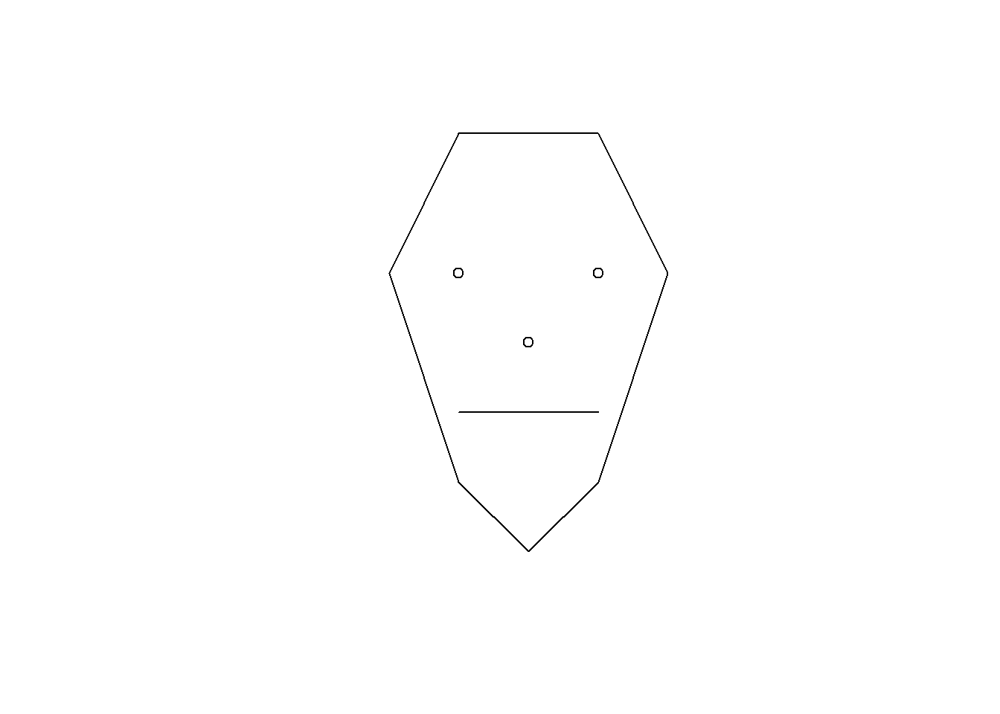
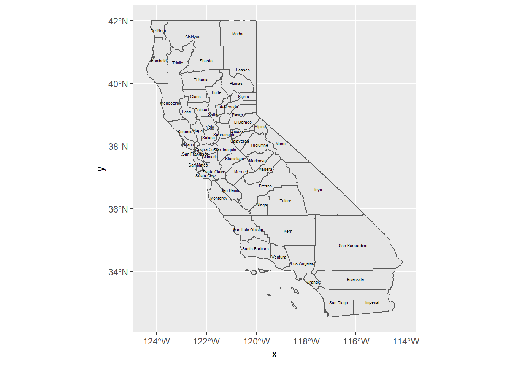

Chapter 4 Visualization
In this section we’ll explore visualization methods in R. Visualization has been a key element of R since its inception, since visualization is central to the exploratory philosophy of the language. The base plot system generally does a good job in coming up with the most likely graphical output based on the data you provide.
plot(penguins$body_mass_g, penguins$flipper_length_mm)Figure 4.1: Flipper length by species
plot(penguins$species, penguins$flipper_length_mm)
Figure 4.2: Flipper length by species
4.1 ggplot2
We’ll mostly focus however on gpplot2, based on the Grammar of Graphics because it provides considerable control over your graphics while remaining fairly easily readable, as long as you buy into its grammar.
ggplot2 looks at three aspects of a graph:
- data : where are the data coming from?
- geometry : what type of graph are we creating?
- aesthetics : what choices can we make about symbology and how do we connect symbology to data?
See https://rstudio.com/wp-content/uploads/2015/03/ggplot2-cheatsheet.pdf
The ggplot2 system provides plots of single and multiple variables, using various coordinate systems (including geographic).
4.2 Plotting one variable
- continuous
- histograms
- density plots
- dot plots
- discrete
- bar
library(iGIScData)
library(tidyverse)
summary(XSptsNDVI)## DistNtoS elevation vegetation geometry
## Min. : 0.0 Min. :1510 Length:29 Length:29
## 1st Qu.: 37.0 1st Qu.:1510 Class :character Class :character
## Median :175.0 Median :1511 Mode :character Mode :character
## Mean :164.7 Mean :1511
## 3rd Qu.:275.5 3rd Qu.:1511
## Max. :298.8 Max. :1511
## NDVIgrowing NDVIsenescent
## Min. :0.3255 Min. :0.1402
## 1st Qu.:0.5052 1st Qu.:0.2418
## Median :0.6169 Median :0.2817
## Mean :0.5901 Mean :0.3662
## 3rd Qu.:0.6768 3rd Qu.:0.5407
## Max. :0.7683 Max. :0.7578ggplot(XSptsNDVI, aes(vegetation)) +
geom_bar()
4.2.1 Histogram
First, to prepare the data, we need to use a pivot_longer on XSptsNDVI:
XSptsPheno <- XSptsNDVI %>%
filter(vegetation != "pine") %>%
pivot_longer(cols = starts_with("NDVI"), names_to = "phenology", values_to = "NDVI") %>%
mutate(phenology = str_sub(phenology, 5, str_length(phenology)))XSptsPheno <- read_csv("data/XSptsPheno.csv")##
## -- Column specification --------------------------------------------------------
## cols(
## DistNtoS = col_double(),
## elevation = col_double(),
## vegetation = col_character(),
## geometry = col_character(),
## phenology = col_character(),
## NDVI = col_double()
## )XSptsPheno %>%
ggplot(aes(NDVI)) +
geom_histogram(binwidth=0.05)Figure 4.3: Distribution of NDVI, Knuthson Meadow
Normal histogram: easier to visualize the distribution, see modes
sierraData %>%
ggplot(aes(TEMPERATURE)) +
geom_histogram(fill="dark green")## `stat_bin()` using `bins = 30`. Pick better value with `binwidth`.Figure 4.4: Distribution of Average Monthly Temperatures, Sierra Nevada
Cumulative histogram with proportions: easier to see percentiles, median
n <- length(sierraData$TEMPERATURE)
sierraData %>%
ggplot(aes(TEMPERATURE)) +
geom_histogram(aes(y=cumsum(..count..)/n), fill="dark goldenrod")## `stat_bin()` using `bins = 30`. Pick better value with `binwidth`.
Figure 4.5: Cumulative Distribution of Average Monthly Temperatures, Sierra Nevada
4.2.2 Density Plot
Density represents how much out of the total. The total area (sum of widths of bins times densities of that bin) adds up to 1.
XSptsPheno %>%
ggplot(aes(NDVI)) +
geom_density()Figure 4.6: Density plot of NDVI, Knuthson Meadow
Note that NDVI values are <1 so bins are very small numbers, so in this case densities can be >1.
Using alpha and mapping phenology as fill color. This illustrates two useful ggplot methods:
- “mapping” a variable (phenology) to an aesthetic property (fill color of the density polygon)
- setting a a property (alpha = 0.2) to all polygons of the density plot. The alpha channel of colors defines its opacity, from invisible (0) to opaque (1) so is commonly used to set as its reverse, transparency.
XSptsPheno %>%
ggplot(aes(NDVI, fill=phenology)) +
geom_density(alpha=0.2)
tidy_eucoak %>%
ggplot(aes(log(runoff_L),fill=tree)) +
geom_density(alpha=0.2)
Figure 4.7: Runoff under Eucalyptus and Oak in Bay Area sites
4.2.3 boxplot
ggplot(data = tidy_eucoak) +
geom_boxplot(aes(x = site, y = runoff_L))
Figure 4.8: Runoff under Eucalyptus and Oak, Bay Area Sites
Get color from tree within aes()
ggplot(data = tidy_eucoak) +
geom_boxplot(aes(x=site, y=runoff_L, color=tree))
Figure 4.9: Runoff at Bay Area Sites, colored as Eucalyptus and Oak
Visualizing soil CO_2_ data with a Tukey box plot
co2 <- soilCO2_97
co2$SITE <- factor(co2$SITE) # in order to make the numeric field a factor
ggplot(data = co2, mapping = aes(x = SITE, y = `CO2%`)) +
geom_boxplot()Figure 4.10: Visualizing soil CO_2_ data with a Tukey box plot
4.3 Plotting two variables
4.3.1 Two continuous variables
We’ve looked at this before – the scatterplot
ggplot(data=sierraFeb) +
geom_point(mapping = aes(TEMPERATURE, ELEVATION))Figure 4.11: Scatter plot of February temperature vs elevation
- The aes (“aesthetics”) function specifies the variables to use as x and y coordinates
- geom_point creates a scatter plot of those coordinate points
Set color for all (not in aes())
ggplot(data=sierraFeb) +
geom_point(aes(TEMPERATURE, ELEVATION), color="blue")
- color is defined outside of aes, so is applies to all points.
- mapping is first argument of geom_point, so
mapping =is not needed.
4.3.2 Two variables, one discrete
ggplot(tidy_eucoak) +
geom_bar(aes(site, runoff_L), stat="identity")Figure 4.12: Two variables, one discrete
4.4 Color systems
You can find a lot about color systems. See these sources:
http://sape.inf.usi.ch/quick-reference/ggplot2/colour http://applied-r.com/rcolorbrewer-palettes/
4.4.1 Color from variable, in aesthetics
In this graph, color is defined inside aes, so is based on COUNTY
ggplot(data=sierraFeb) +
geom_point(aes(TEMPERATURE, ELEVATION, color=COUNTY))Figure 4.13: Color set within aes()
Plotting lines using the same x,y in aesthetics
sierraFeb %>%
ggplot(aes(TEMPERATURE,ELEVATION)) +
geom_point(color="blue") +
geom_line(color="red")
Figure 4.14: Using aesthetics settings for both points and lines
Note the use of pipe to start with the data then apply ggplot.
River map & profile
x <- c(1000, 1100, 1300, 1500, 1600, 1800, 1900)
y <- c(500, 700, 800, 1000, 1200, 1300, 1500)
z <- c(0, 1, 2, 5, 25, 75, 150)
d <- rep(NA, length(x))
longd <- rep(NA, length(x))
s <- rep(NA, length(x))
for(i in 1:length(x)){
if(i==1){longd[i] <- 0; d[i] <-0}
else{
d[i] <- sqrt((x[i]-x[i-1])^2 + (y[i]-y[i-1])^2)
longd[i] <- longd[i-1] + d[i]
s[i-1] <- (z[i]-z[i-1])/d[i]}}
longprofile <- bind_cols(x=x,y=y,z=z,d=d,longd=longd,s=s)
ggplot(longprofile, aes(x,y)) +
geom_line(mapping=aes(col=s), size=1.2) +
geom_point(mapping=aes(col=s, size=z)) +
coord_fixed(ratio=1) + scale_color_gradient(low="green", high="red") +
ggtitle("Simulated river path, elevations and slopes")
Figure 4.15: Longitudinal Profiles
ggplot(longprofile, aes(longd,z)) + geom_line(aes(col=s), size=1.5) + geom_point() +
scale_color_gradient(low="green", high="red") +
ggtitle("Elevation over longitudinal distance upstream")Figure 4.16: Longitudinal Profiles
ggplot(longprofile, aes(longd,s)) + geom_point(aes(col=s), size=3) +
scale_color_gradient(low="green", high="red") +
ggtitle("Slope over longitudinal distance upstream")## Warning: Removed 1 rows containing missing values (geom_point).
Figure 4.17: Longitudinal Profiles
#summary(lm(s~longd, data=longprofile))4.4.2 Trend line
sierraFeb %>%
ggplot(aes(TEMPERATURE,ELEVATION)) +
geom_point(color="blue") +
geom_smooth(color="red", method="lm")## `geom_smooth()` using formula 'y ~ x'## Warning: Removed 20 rows containing non-finite values (stat_smooth).## Warning: Removed 20 rows containing missing values (geom_point).Figure 4.18: Trend line using geom_smooth with a linear model
4.4.3 General symbology
A useful vignette accessed by vignette("ggplot2-specs") lets you see aesthetic specifications for symbols, including:
- Color & fill
- Lines
- line type, size, ends
- Polygon
- border color, linetype, size
- fill
- Points
- shape
- size
- color & fill
- stroke
- Text
- font face & size
- justification
4.4.3.1 Categorical symbology
One example of a “Big Data” resource is EPA’s Toxic Release Inventory that tracks releases from a wide array of sources, from oil refineries on down. One way of dealing with big data in terms of exploring meaning is to use symbology to try to make sense of it.
csvPath <- system.file("extdata","TRI_2017_CA.csv", package="iGIScData")
TRI <- read_csv(csvPath) %>%
filter(`5.1_FUGITIVE_AIR` > 100 & `5.2_STACK_AIR` > 100)## Warning: Missing column names filled in: 'X110' [110]## Warning: 3807 parsing failures.
## row col expected actual file
## 1 -- 110 columns 109 columns 'C:/Users/900008452/Documents/R/win-library/4.0/iGIScData/extdata/TRI_2017_CA.csv'
## 2 -- 110 columns 109 columns 'C:/Users/900008452/Documents/R/win-library/4.0/iGIScData/extdata/TRI_2017_CA.csv'
## 3 -- 110 columns 109 columns 'C:/Users/900008452/Documents/R/win-library/4.0/iGIScData/extdata/TRI_2017_CA.csv'
## 4 -- 110 columns 109 columns 'C:/Users/900008452/Documents/R/win-library/4.0/iGIScData/extdata/TRI_2017_CA.csv'
## 5 -- 110 columns 109 columns 'C:/Users/900008452/Documents/R/win-library/4.0/iGIScData/extdata/TRI_2017_CA.csv'
## ... ... ........... ........... ..................................................................................
## See problems(...) for more details.ggplot(data = TRI, aes(log(`5.2_STACK_AIR`), log(`5.1_FUGITIVE_AIR`),
color = INDUSTRY_SECTOR)) +
geom_point()
Figure 4.19: EPA Toxic Release Inventory, as a big data set needing symbology clarification
4.4.3.2 Graphs from grouped data
XSptsPheno %>%
ggplot() +
geom_point(aes(elevation, NDVI, shape=vegetation,
color = phenology), size = 3) +
geom_smooth(aes(elevation, NDVI,
color = phenology), method="lm") ## `geom_smooth()` using formula 'y ~ x'Figure 4.20: NDVI symbolized by vegetation in two seasons
ggplot(data = tidy_eucoak) +
geom_point(mapping = aes(x = rain_mm, y = runoff_L, color = tree)) +
geom_smooth(mapping = aes(x = rain_mm, y= runoff_L, color = tree),
method = "lm") +
scale_color_manual(values = c("seagreen4", "orange3"))## `geom_smooth()` using formula 'y ~ x'Figure 4.21: Eucalyptus and Oak: rainfall and runoff
4.4.3.3 Faceted graphs
This is another option to displaying groups of data, with parallel graphs
ggplot(data = tidy_eucoak) +
geom_point(aes(x=rain_mm,y=runoff_L)) +
geom_smooth(aes(x=rain_mm,y=runoff_L), method="lm") +
facet_grid(tree ~ .)## `geom_smooth()` using formula 'y ~ x'Figure 4.22: Faceted graph alternative
4.5 Titles and subtitles
ggplot(data = tidy_eucoak) +
geom_point(aes(x=rain_mm,y=runoff_L, color=tree)) +
geom_smooth(aes(x=rain_mm,y=runoff_L, color=tree), method="lm") +
scale_color_manual(values=c("seagreen4","orange3")) +
labs(title="rainfall ~ runoff",
subtitle="eucalyptus & oak sites, 2016")## `geom_smooth()` using formula 'y ~ x'
Figure 4.23: Titles added
4.6 Pairs Plot
sierraFeb %>%
select(LATITUDE, ELEVATION, TEMPERATURE, PRECIPITATION) %>%
pairs()Figure 4.24: Pairs plot for Sierra Nevada stations variables
4.7 Exercises
Create a bar graph of the counts of the species in the penguins data frame. What can you say about what it shows?
Use bind_cols in dplyr to create a tibble from built-in vectors state.abb and state.region, then use ggplot with geom_bar to create a bar graph of the four regions.
Convert the built-in time series
treeringinto a tibbletrusing thetibble()functions with the single variable assigned astreering = treering, then create a histogram, using that tibble and variable for thedataandxsettings needed. Attach a screen capture of the histogram.Start by clearing your environment with the broom icon in the Environment tab, then we’ll create two tibbles: Create a new tibble
stusingbind_colswithName=state.name,Abb=state.abb,Region=state.region, then a tibble created fromstate.x77withas_tibble. Then use the save button in the Environment tab to save these two tibbles as “Q4.RData,” and attach that for your answer.From
st, create a density plot from the variableFrost(number of days with frost for that state). Attach that plot, and answer: approximately what is the modal value?From
stcreate a a boxplot ofAreabyRegion. Which region has the highest and which has the lowest median Area? Do the same forFrost.From st, compare murder rate (y=Murder) to Frost (x) in a scatter plot, colored by Region.
Add a trend line (smooth) with method=“lm” to your scatterplot, not colored by Region (but keep the points colored by Region). What can you say about what this graph is showing you?
Add a title to your graph.
Change your scatterplot to place labels using the Abb variable (still colored by Region) using
geom_label(aes(label=Abb, col=Region)). Any observations about outliers?